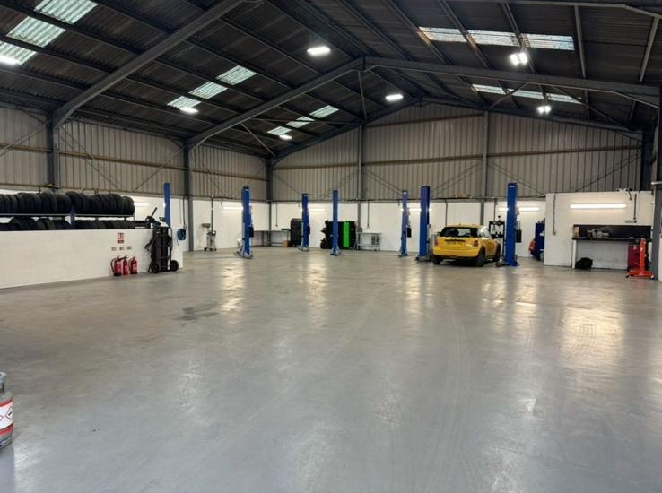

A.B Vehicle Services


We are a fully certified MOT testing station for Class 4 and Class 7 vehicles. Our thorough inspections ensure your car meets all legal roadworthiness and environmental standards. If any issues are found, we’ll explain them clearly and carry out repairs so you can get back on the road with confidence.

Regular servicing is essential for keeping your vehicle running smoothly and preventing costly breakdowns. We offer interim and full services, including oil and filter changes, brake checks, and full safety inspections tailored to your vehicle’s needs.

Modern vehicles rely on complex electronic systems. Our advanced diagnostic tools quickly identify faults, saving you time, money, and unnecessary repairs.
We offer a wide range of diagnostic services, including:
Keep your vehicle cool, comfortable, and efficient with our professional air conditioning services. Whether your system isn’t blowing cold air, has an unpleasant smell, or hasn’t been serviced in a while, our technicians can help.
Why service your air conditioning?
Your tyres are the only point of contact between your vehicle and the road, making them critical for safety, handling, and fuel efficiency. Our tyre services ensure you stay safe and in control in all driving conditions.
We offer a full range of tyre services, including:
Why are well-maintained tyres important?
From minor fixes to essential maintenance, we provide reliable general repair services to keep your vehicle running safely and smoothly. Our experienced technicians handle a wide range of mechanical and electrical issues.
Our general repair services include:
We use quality parts and professional diagnostics to ensure every repair is completed to a high standard, giving you confidence and peace of mind on the road.